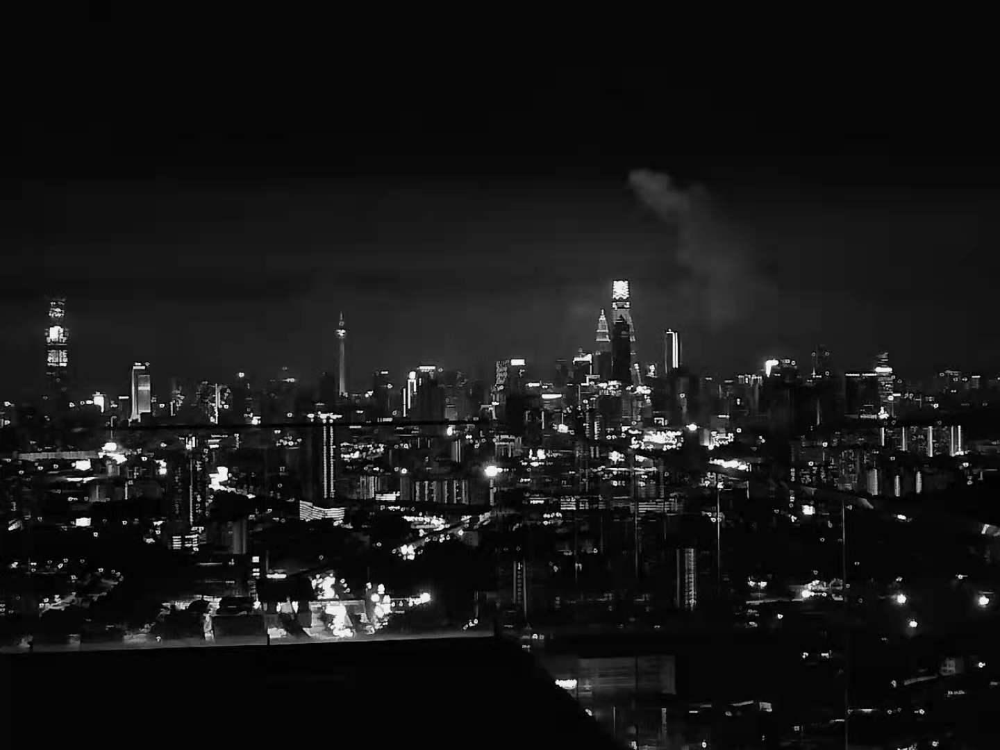

黎明到來前的客棧，永不打烊
記·2019
365個拼湊的日夜
December 31, 2019
2019，多事之秋的一年，快結束了。
2019年，經歷了很多，喜憂參半吧，得到與失去是今年最大的禮物。但，也許就是這樣，人才會不斷在成長，因為它們也是成長的必修課。
2019年，要做的事情越來越多，也許還是那句話，年歲漸長，要經歷和承擔的責任也越大，很感謝這樣，進一步為自己的人生添上另一份精彩。
回想一整年，突然發現自己又要老一歲了，雖然不知道未來的挑戰會怎樣，但至少不是得過且過的活著。今年於我，跌跌撞撞，前半年的狀態都很糟糕，幸好後來自己沒有放棄自己，走到今天很感慨，很感謝。我就是這樣，總以為把生活過的很瀟灑，在青春起步的年華放飛自我，不斷尋尋覓覓。然而，我不知道每一段旅程會經歷什麼，遇到什麼，認識形形色色的人，看盡冷暖，這些都在我的預期範圍內，青春於我，就是一片大草原，所有所有，我都把它稱為——青春。
說說得到與失去吧，因為自己的不珍惜、不認真，錯失了最重要的朋友和關係吧，原本是一個圓滿的句號，最后只剩留在原地的自己。也許以後以後，才會更加珍惜現在留在身邊的人和物，人會來也會離開，世界上沒有誰一定要誰，也沒有一定強求，最後留住的，才是最珍貴的，不是嗎？再來是得到，自己終於勇敢踏出了那一步吧，好好做自己，努力生活，去完成那些未完成的夢與想。一群人，一群時而像家人、像朋友的人，讓我知道原來有一群可以瘋、鬧，互相鼓勵和扶持，哈哈大笑的人是多麼重要和喜歡。2019年，感謝他們的出現，讓我更認識自己，與他們的邂逅，成為了結束前的禮物。
|  |
| 悵然若失 |
在辯論隊道別的前一天晚上，我到頂樓去吹吹風，看看夜景，四下無人卻悵然若失。回頭才發現，2019就要結束了，好像在不捨什麼東西，可能是曾經的歡聲笑語，凌晨的徹夜狂歡，還有好多好多，都在這一年發生，這一年結束。不禁想，是什麼讓結果變成如此，此時此刻腦還在不斷回轉，試圖找個突破口，找到答案告訴自己原因。
2019找到了一群很棒很好的人，笑、瘋、鬧、吶喊什麼都來，一群最普通最平凡的人，成就了一個氛圍最好的群體。是他們，讓我原以為2019就要這樣潦草結束時，添上了驚喜與精彩，如果沒有遇到他們，或許就沒有今天這篇文章，也沒有這麼一段來紀念最最難得和珍貴的他們。未來見面還是會記得微笑寒暄，如果哪天還是我們，就是坐在咖啡廳互相聽對方述說來時的路的人。
下半年，稱得上忙碌，活動一個接一個，卻讓我在結束初中生涯以前，過上那麼精彩的半年。是更多的成長，更多的認識自己，更多的體驗。明年可能是馬不停蹄的一年，但也希望繼續精彩，過了12點就要翻篇了，告別過去吧，不管今年發生了什麼，是時候翻開另一篇章了。
對於明年和未來，其實就是未知與憧憬。但願翻篇以後，老朋友依舊要好，依然對生活抱有理想。
希望有天，我們在擁抱夢想的同時，也懷抱自由。
僅此此文，記錄2019。
僅以此文，致敬2019。
僅以此文，獻給2019年最特別的他們。